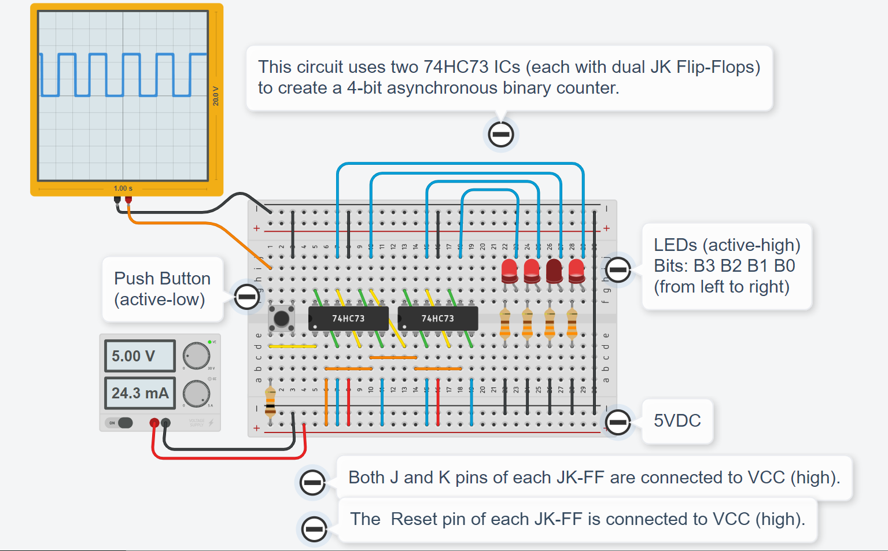

การสร้างวงจรตัวนับไบนารีด้วยลอจิกเกต JK Flip-Flops#
บทความนี้กล่าวถึง ตัวอย่างการฝึกต่อวงจรบนเบรดบอร์ดด้วยไอซี 74HC73 (Dual JK Flip-Flops with Asynchronous Clear) โดยนำมาสร้างเป็นวงจรตัวนับ Ripple-Carry (Asynchrnous) Binary Counter ขนาด 4 บิต และสามารถจำลองการทำงานเสมือนจริงได้โดยใช้ซอฟต์แวร์อย่างเช่น AUTODESK Tinkercad Circuits นอกจากนั้นแล้วยังมีตัวอย่างการเขียนโค้ด VHDL และ Verilog สำหรับการสร้างโมเดลจำลองการทำงานของวงจรดังกล่าวและตรวจสอบการทำงานโดยใช้ซอฟต์แวร์ประเภท Open Source
Keywords: Circuit Simulation, AUTODESK Tinkercad, Virtual Breadboard Circuit Prototyping, JK Flip-Flops, 74HC73, Ripple-Carry Binary Counter
▷ ฟลิปฟลอปแบบ JK และ ไอซี 74HC73#
"ฟลิปฟลอป" (Flip Flop) หนึ่งตัวสามารถใช้เก็บข้อมูลหนึ่งบิต และมีอยู่หลายประเภท เช่น D-FF, T-FF, SR-FF และ JK-FF ซึ่งมีฟังก์ชันการทำงานแตกต่างกัน JK-FF เป็น "ฟลิปฟลอป" ประเภทหนึ่ง มีขาเอาต์พุตสำหรับค่าของฟลิปฟลอปคือ Q (Output) และ /Q (Inverted Output) สามารถบันทึกข้อมูลหนึ่งบิต และทำงานตามจังหวะของสัญญาณ CLK (Clock) ที่ขอบขาขึ้น (Positive Edge-Triggered) หรือขาลง (Negative Edge-Triggered) แบบใดแบบหนึ่ง มีขาสัญญาณควบคุมเป็นอินพุตคือ J และ K เพื่อกำหนดค่าลอจิกของฟลิปฟลอป นอกจากนั้นแล้วยังมีขาควบคุม RESET หรือ CLR เป็นอินพุตสำหรับการรีเซต หรือ การเคลียร์ค่าลอจิก โดยไม่ต้องรอจังหวะของสัญญาณ CLK (จึงถือว่าเป็น Asynchronous Clear)
ไอซีประเภทลอจิกเกต (Logic IC) เบอร์ 74HC73 เป็นหนึ่งในซีรีย์ 74HCxx Standard Logic ICs มีลอจิกเกตประเภท JK Flip Flop (JK-FF) อยู่ 2 ตัว ภายในตัวถังเดียวกัน ไอซี MC74HC73A ของบริษัท ON Semiconductor เป็นตัวอย่างของไอซีที่มีฟังก์ชันการทำงานได้เหมือน 74HC73 จากรูปจะเห็นได้ว่า มี JK-FF อยู่สองชุด และแม้ว่าจะอยู่ในตัวถังของไอซีเดียวกัน แต่ JK-FF ชุดที่ 1 และ 2 ก็มีขา I/O อิสระจากกัน แต่ใช้ขาแรงดันไฟเลี้ยง VCC กับ GND เหมือนกัน
รูป: แผนผังแสดงตำแหน่งขาของไอซี MC74HC73A (Source: ON Semiconductor)
ฟังก์ชันการทำงานของ JK-FF สามารถดูได้จากตาราง Function Table ของไอซี MC74HC73A
- เมื่อขาอินพุต Reset มีค่าเป็นลอจิก Low จะทำให้ขาเอาต์พุต Q เป็น Low และขาเอาต์พุต /Q เป็น High โดยไม่สนใจว่า ขาอินพุต J และ K และสัญญาณ CLK ของฟลิปฟลอปเป็นอย่างไรในขณะนั้น
- JK-FF จะเปลี่ยนสถานะของเอาต์พุต ก็ต่อเมื่อเกิดขอบขาลง (Falling Edge) ของสัญญาณ CLK เท่านั้น
- เมื่อเกิดขอบขาลงของ CLK และ J มีค่าลอจิกที่แตกต่างจาก K จะทำให้ค่าของ Q เป็นไปตามค่าลอจิกของอินพุต J และ /Q จะเป็นไปตาม K ในขณะนั้น
- เมื่อเกิดขอบขาลงของ CLK ถ้า J และ K เป็น High เหมือนกัน จะทำให้ค่าของ Q และ /Q แต่ละขา เกิดการสลับจากค่าเดิม (Toggle) ในขณะนั้น
- เมื่อเกิดขอบขาลงของ CLK ถ้า J และ K เป็น Low เหมือนกัน ค่าของ Q และ /Q จะไม่เปลี่ยนแปลงจากเดิม
ข้อสังเกต:
- ไอซีลอจิกตามมาตรฐาน 74HCxx สำหรับ JK-FF ยังมีเบอร์อื่นอีก เช่น CD4027B (CMOS Dual J-K Master-Slave Flip-Flop) ของบริษัท Texas Instruments (TI) ซึ่งมีขาอินพุต "รีเซต" (RESET) และ "เซต" (SET) แบบ Active-High และทำงานตามจังหวะขอบขาขึ้นของสัญญาณ CLK (Positive Edge-Triggered)
รูป: ผังวงจรในระดับลอจิกเกต (Logic Diagram) ที่แสดงให้เห็นองค์ประกอบพื้นฐานของ JK-FF (หนึ่งตัว) ภายในไอซี MC74HC73A เช่น ลอจิกเกต NOT, OR2, NAND2 และ TG (CMOS Transmission Gate)
TG ประกอบด้วยทรานซิสเตอร์แบบ NMOS และ PMOS หนึ่งคู่ ทำหน้าที่เป็นสวิตช์เปิด/ปิด เพื่อให้เป็นทางผ่านของสัญญาณหรือเชื่อมต่อถึงกันระหว่างสองจุด ในรูปวงจรจะเห็นได้ว่า มี TG อยู่ 2 กลุ่ม ๆ ละ 3 ตัว แต่ละกลุ่มถูกควบคุมด้วยสัญญาณ CLK และ /CLK เหมือนกัน ถ้าต่างกลุ่มกัน ก็จะ "เปิดหรือปิดประตู" ไม่เหมือนกันในแต่ละช่วงเวลา
ลองมาดูว่า ถ้ามีการรีเซต JK-FF จะเกิดอะไรขึ้นในวงจรภายในฟลิปฟลอป (ภายในไอซี MC74HC73A) และจะเห็นได้ว่า ที่ขาเอาต์พุต Q และ /Q จะมีค่าลอจิก 0 และ 1 ตามลำดับ
รูป: ตัวอย่างกรณีที่เกิดการรีเซตค่าลอจิกของ JK-FF เมื่อ RESET=0 (Low) จำแนกตามกรณีของค่าลอจิกที่ขาอินพุต CLK
วงจร JK-FF ประกอบด้วยส่วนแรกที่เป็นวงจรกำหนดค่าของข้อมูลอินพุต และส่วนที่ใช้ในการเก็บข้อมูลหนึ่งบิต ซึ่งประกอบด้วย D-Latch หนึ่งคู่ ต่อเข้าด้วยกัน และทำงานในลักษณะที่เรียกว่า Master-Slave Flip-Flop
- วงจรของ Master จะมีค่าลอจิกตามข้อมูล-อินพุต D เมื่อสัญญาณ CLK=1 และในช่วงถัดไป เมื่อ CLK=0 ก็จะเก็บค่าดังกล่าวไว้ไม่ให้เปลี่ยนแปลง และใช้เป็นเอาต์พุตด้วย
- วงจรของ Slave คงค่าเอาไว้เพื่อใช้เป็นเอาต์พุต เมื่อสัญญาณ CLK=1 และในช่วงถัดไป เมื่อ CLK=0 ก็จะรับค่าจากวงจร Master เพื่อนำมาเก็บไว้ในเฟสถัดไป (ค่า D จะนำไปใช้เป็น Q)
รูป: การเปลี่ยนแปลงภายใน JK-FF เมื่อเกิดขอบขาลงของสัญญาณ CLK
ลองดูวงจรภายในไอซีลจอจิก CD4027B (และเปรียบเทียบความแตกต่างกับไอซี MC74HC73A)
รูป: วงจรภายในของ JK-FF (หนึ่งตัว) และตารางฟังก์ชันเชิงลอจิกของไอซี CD4027B (Source: TI)
▷ การสร้างวงจรตัวนับไบนารี#
ถ้าต่อขาอินพุต J และ K กับแรงดันไฟเลี้ยง ให้มีค่าเป็นลอจิก High เหมือนกัน (หรือนำไปต่อกับขาอินพุตที่มีชื่อว่า TOGGLE เป็นสัญญาณควบคุม) ฟลิปฟลอป JK-FF จะทำหน้าที่ได้เหมือนฟลิปฟลอปประเภทที่เรียกว่า Toggle Flip Flop (T-FF) ในกรณีนี้ ทุกครั้งที่เกิดขอบขาลงของสัญญาณ CLK จะทำให้ T-FF เปลี่ยนสถานะลอจิกที่ขาเอาต์พุตทั้งสอง เกิดการสลับค่าลอจิก (Toggle)
ฟลิปฟลอป T-FF สามารถนำมาใช้ในการสร้างวงจรตัวนับแบบไบนารี ในรูปแบบที่เรียกว่า Ripple-Carry (Asynchrnous) Binary Counter แบ่งเป็นสองกรณี
- สำหรับฟลิปที่ทำงานตามจังหวะของขอบขาลง (Falling Edge): ขาเอาต์พุต Q ของ T-FF ตัวหนึ่ง จะนำไปต่อเข้ากับขา CLK ของ T-FF ตัวถัดไปตามลำดับ
- สำหรับฟลิปที่ทำงานตามจังหวะของขอบขาขึ้น (Rising Edge): ขาเอาต์พุต /Q ของ T-FF ตัวหนึ่ง จะนำไปต่อเข้ากับขา CLK ของ T-FF ตัวถัดไปตามลำดับ
ทุกครั้งที่เกิดขอบขาลง (ตามวงจรในตัวอย่างนี้) จะทำให้ T-FF นับขึ้นหนึ่งครั้ง และเป็นตัวนับแบบหนึ่งบิต โดยมีค่าตามลำดับดังนี้ 0 -> 1 -> 0 -> 1 -> ...
การเปลี่ยนแปลงค่าลอจิกหรือการสลับสถานะลอจิกที่ขาเอาต์พุตของฟลิปฟลอปตัวหนึ่ง จะถูกนำไปใช้เป็นพัลส์สำหรับสัญญาณ Clock ของฟลิปฟลอปอีกตัวหนึ่งในตำแหน่งถัดไป T-FF
รูป: ผังวงจรของ 4-bit Binary Counter ที่ประกอบด้วย JK-FF จำนวน 4 ตัว
ให้สังเกตว่า JK-FF ทั้งสองตัวของไอซี 74HC73 ทำงานที่ขอบขาลง และสามารถสร้างวงจรตัวนับขนาด 4 บิต โดยใช้ JK-FF จำนวน 4 ตัว (ใช้ไอซี 74HC73 จำนวน 2 ตัว)
รูป: ตัวอย่างการต่อวงจรตัวนับ 4-Bit Ripple-Carry Binary Counter โดยใช้ไอซี 74HC73 จำนวน 2 ตัว (ขาอินพุต RESET และ TOGGLE ต่อกับ VCC มีค่าลอจิก High)

รูป: ตัวอย่างการวางแผนต่อวงจรตัวนับ 4-Bit Ripple-Carry Binary Counter บนเบรดบอร์ด โดยใช้ไอซี 74HC73 และใช้ปุ่มกดสร้างสัญญาณ Pulses สำหรับ CLK ส่วนขา RESET ต่อกับ VCC ให้เป็นลอจิก High
รูป: ตัวอย่างการจำลองการทำงานของวงจรตัวนับด้วย TinkerCad และใช้อุปกรณ์ Function Generator สร้างสัญญาณ CLK ความถี่ต่ำ แทนการกดปุ่ม
นอกเหนือจากซอฟต์แวร์ TinkerCad ก็ยังมีซอฟต์แวร์ที่เป็นตัวเลือกอื่นอีกที่สามารถนำมาใช้จำลองการทำงานของวงจรดิจิทัลได้ ตัวอย่างถัดไปเป็นการจำลองการทำงานด้วยโปรแกรม EasyEDA Online PCB Design & Circuit Simulator และ Falstad's Online Electronic Circuit Simulator
รูป: ตัวอย่างการจำลองการทำงานของวงจรตัวนับด้วย EasyEDA Simulator และแสดงรูปคลื่นสัญญาณเอาต์พุตด้วย Virtual Logical Analyzer
รูป: ตัวอย่างการจำลองการทำงานของวงจรตัวนับด้วย Falstad's Online Circuit Simulator
อีกตัวอย่างหนึ่งเป็นการสาธิตการใช้ซอฟต์แวร์ CircuitVerse Online Simulator เพื่อวาดผังวงจรและจำลองการทำงาน และสามารถเขียนโค้ด Verilog เพื่อสร้างวงจรดิจิทัลและนำมาใช้ได้
ในผังวงจร จะเห็นได้ว่า มี JK_FF อยู่ 4 ตัว มีขา J และ K ของทุกตัว เชื่อมต่อกับปุ่มอินพุต TOGGLE และมีขา CLR สำหรับรีเซตค่าของฟลิปฟลอปทุกตัว เชื่อมต่อกับปุ่มอินพุต RESET
ขา Q ของ JK-FF แต่จะตัวจะเชื่อมต่อกับ LED อย่างละหนึ่งตัว เพื่อแสดงสถานะลอจิก JK-FF ที่อยู่ทางขวามือ จะได้รับอินพุตที่ขา CLK มาจากตัวสร้างสัญญาณพัลส์ต่อเนื่องสำหรับ Clock ความถี่ต่ำ เมื่อมีการจำลองการทำงานของวงจร
รูป: ตัวอย่างผังวงจร 4-bit Ripple Carry Counter ที่ประกอบด้วย JK_FF (Circuit Component) และการจำลองการทำงานแบบ Interactive Circuit Simulation
รูป: การสร้างแบบจำลองของ JK_FF ด้วยภาษา Verilog แล้วนำไปใช้ในการสร้างวงจรตัวนับขนาด 4 บิต
ข้อสังเกต:
- ในตัวอย่างโค้ด Verilog วงจร JK-FF ทำงานด้วยขอบขาลง (Falling-Edge) และใช้ขา Q เพื่อนำสัญญาณเอาต์พุตไปใช้กับขาอินพุต CLK ของ JK-FF ตัวถัดไป และนำขา Q ไปต่อกับวงจร LED ที่ทำงานแบบ Active-High
- ถ้าจะแก้ไขให้ JK-FF ทำงานด้วยขอบขาขึ้น จะต้องเปลี่ยนไปใช้ขา /Q เพื่อนำไปใช้กับขา CLK ของ JK-FF ตัวถัดไป และนำขา /Q ไปต่อกับวงจร LED ที่ทำงานแบบ Active-Low
- วงจรไบนารีในลักษณะนี้ ไม่เหมาะสำหรับการนำไปสร้างเป็นวงจรในชิป FPGA เนื่องจากไม่เป็น Fully Synchronous Logic Design เพราะฟลิปฟลอป JK-FF แต่ละตัว มีสัญญาณ CLK ที่แตกต่างกัน (หรือกล่าวได้ว่า ฟลิปฟลอปในวงจรไม่ได้ใช้สัญญาณ CLK เดียวกัน)
▷ การเขียนโค้ด VHDL เพื่อจำลองการทำงานสำหรับวงจรดิจิทัล#
ถัดไปเป็นตัวอย่างการเขียนโค้ด VHDL เพื่อจำลองการทำงานของฟลิปฟลอป JK-FF และการนำฟลิปฟลอป JK-FF จำนวน 4 ตัว นำมาต่อเข้าด้วยกันให้เป็นวงจรตัวนับไบนารีที่มีขนาด 4 บิต
จากตัวอย่างโค้ดจะเห็นได้ว่า วงจร ripple_carry_counter จะประกอบด้วย
วงจร JK_FF จำนวน 4 ตัว นำมาต่อเข้าด้วยกัน
File: ripple_carry_counter.vhd
library ieee;
use ieee.std_logic_1164.all;
entity JK_FF is
port( CLK, CLR, J, K: in std_logic;
Q, QB : out std_logic
);
end JK_FF;
architecture synth of JK_FF is
signal ff : std_logic;
begin
process (CLK, CLR) begin
if ( CLR = '0') then
ff <= '0'; -- clear the FF's value
elsif CLK'event and CLK='0' then -- falling edge
if J /= K then
ff <= J; -- load the input J
elsif J = '1' and K = '1' then
ff <= not ff; -- toggle the FF's value
end if;
end if;
end process;
-- output and inverted output
Q <= ff;
QB <= not ff;
end synth;
-------------------------------------------------
library ieee;
use ieee.std_logic_1164.all;
entity ripple_carry_counter is
port( CLK, RESET : in std_logic;
Q : out std_logic_vector(3 downto 0)
);
end ripple_carry_counter;
architecture structural of ripple_carry_counter is
component JK_FF is
port( CLK, CLR, J, K : in std_logic;
Q, QB : out std_logic );
end component;
signal t: std_logic_vector(4 downto 0);
signal VCC : std_logic;
begin
VCC <= '1';
t(0) <= CLK;
-- create four instance of JK_FF components
U_i: for i in 0 to 3 generate
Instance: JK_FF port map(
CLK => t(i), CLR => RESET,
J => VCC, K => VCC,
Q => t(i+1), QB => open
);
end generate;
-- 4-bit binary output
Q <= t(4 downto 1);
end structural;
รูป: ตัวอย่างวงจรดิจิทัลที่ได้จากการแปลงโค้ด VHDL หรือการสังเคราะห์วงจร สำหรับ JK_FF
อีกไฟล์หนึ่งเป็น VHDL Testbench เพื่อใช้ในการจำลองการทำงานของวงจร
ripple_carry_counter
File: ripple_carry_counter_tb.vhd
library IEEE;
use IEEE.std_logic_1164.all;
entity testbench is
-- empty
end testbench;
architecture tb of testbench is
-- DUT component
component ripple_carry_counter is
port( CLK, RESET : in std_logic;
Q : out std_logic_vector(3 downto 0) );
end component;
signal t_clk, t_reset: std_logic := '0';
signal t_q: std_logic_vector(3 downto 0);
begin
DUT: ripple_carry_counter
port map( t_clk, t_reset, t_q );
process begin
t_clk <= not t_clk;
wait for 10 ns;
end process;
process begin
assert false report "Simulation started." severity note;
t_reset <= '0';
wait for 100 ns;
t_reset <= '1';
wait for 1000 ns;
t_reset <= '0';
wait for 100 ns;
t_reset <= '1';
wait for 10 us;
assert false report "Test done." severity note;
wait;
end process;
end tb;
ถ้าใช้โปรแกรม GHDL ซึ่งเป็นซอฟต์แวร์ประเภท Open Source เพื่อการจำลองการทำงานของวงจร (ในบทความนี้ ได้นำ GHDL v4.0.0-dev มาใช้งานสำหรับ Ubuntu Linux) ก็มีตัวอย่างการทำคำสั่งใน Bash Shell ดังนี้
# Install GHDL and GTKWave packages
$ sudo apt install ghdl gtkwave \
libcanberra-gtk-module libcanberra-gtk3-module
การทำคำสั่งเพื่อคอมไพล์โค้ด VHDL และจำลองการทำงานของวงจร VHDL Testbench ด้วย GHDL
$ ghdl -i ripple_carry_counter.vhd ripple_carry_counter_tb.vhd \
&& ghdl -m testbench \
&& ghdl -r testbench --vcd=dump.vcd --stop-time=15us
เมื่อได้ไฟล์ dump.vcd มาแล้ว ก็สามารถเปิดดูรูปคลื่นสัญญาณโดยใช้โปรแกรม
GTKWave ได้
รูป: ตัวอย่างผลการจำลองการทำงานของวงจรซึ่งแสดงอยู่ในรูปคลื่นสัญญาณดิจิทัล
▷ ตัวอย่างการสร้างวงจรด้วย Verilog#
ถัดไปเป็นตัวอย่างการเขียนโค้ดด้วยภาษา Verilog ซึ่งจะทำงานได้เหมือนวงจรที่เขียนโค้ดด้วยภาษา VHDL
ในตัวอย่างที่แล้ว จากตัวอย่างโค้ดจะเห็นได้ว่า มีการสร้าง JK_FF แล้วนำมาใช้จำนวน 4 ตัว ต่อเข้าด้วยกัน
ให้ได้วงจร ripple_carry_counter
File: ripple_carry_counter.v
//---------------------------------------------------
module JK_FF (
input CLK, CLR, J, K,
output Q, QB
);
reg ff; // internal single-bit flip-flop (FF)
always @(negedge CLK or negedge CLR) begin
if (CLR == 1'b0) begin
ff <= 0; // clear the FF's value
end else begin
if (J !== K) begin
ff <= J; // load the FF's value
end else if (J && K) begin
ff <= ~ff; // toggle the FF's value.
end
end
end
// output and inverted output
assign Q = ff;
assign QB = ~ff;
endmodule
//---------------------------------------------------
module ripple_carry_counter (
input CLK, RESET,
output [3:0] Q
);
wire [4:0] t; // internal wires
wire VCC;
assign VCC = 1'b1;
assign t[0] = CLK;
genvar i;
generate for (i=0; i<=3; i = i+1)
begin : U_i
JK_FF Instance (
.CLK(t[i]), .CLR(RESET),
.J(VCC), .K(VCC),
.Q(t[i+1]), .QB()
);
end
endgenerate
// 4-bit output
assign Q = t[4:1];
endmodule
//---------------------------------------------------
คำถาม: ถ้าต้องการให้ JK_FF เปลี่ยนจากการทำงานตามจังหวะขอบขาลง ให้เป็นไปตามขอบขาขึ้น จะต้องแก้ไขโค้ดอย่างไรจึงจะทำให้วงจรโดยรวมทำงานได้ผลเหมือนเดิม?
ตัวอย่างการเขียนโค้ด Verilog Testbench มีดังนี้
File: ripple_carry_counter_tb.v
`timescale 1ns / 1ps
module testbench;
// Signals
reg t_clk = 1'b0;
reg t_reset = 1'b0;
wire [3:0] t_q;
// DUT component definition
ripple_carry_counter DUT (
.CLK(t_clk),
.RESET(t_reset),
.Q(t_q)
);
// Dumpfile and dumpvars
initial begin
$dumpfile("waveform.vcd");
$dumpvars(0, testbench); // Dump all variables in the testbench
end
// Clock generation
always begin
#5 t_clk = ~t_clk;
end
// Test procedure
initial begin
$display("Simulation started.");
#100;
t_reset = 1'b1;
#1000;
t_reset = 1'b0;
#100;
t_reset = 1'b1;
#10;
$display("Test done.");
$finish;
end
endmodule
การจำลองการทำงานของโค้ด Verilog Testbench สามารถใช้โปรแกรม Icarus Verilog ซึ่งเป็นซอฟต์แวร์ประเภท Open Source (ในบทความนี้ได้ทดลองใช้ Icarus Verilog v11.0) มีตัวอย่างการทำคำสั่งเพื่อใช้งานสำหรับ Ubuntu Linux ดังนี้
# Install iverilog
$ sudo apt install iverilog
$ iverilog -o simulation_tb \
ripple_carry_counter.v ripple_carry_counter_tb.v \
&& vvp simulation_tb
เมื่อทำคำสั่งได้สำเร็จแล้ว จะได้ไฟล์ VCD ชื่อ waveform.vcd
และสามารถเปิดดูรูปคลื่นสัญญาณโดยใช้โปรแกรม GTKWave
หากต้องการจะลองใช้ซอฟต์แวร์แบบออนไลน์ ก็สามารถใช้บริการฟรีของเว็บไซต์ เช่น EDAplayground
รูป: การจำลองการทำงานของโค้ด Verilog Testbench โดยใช้ EDAplayground (เลือกใช้ Icarus Verilog)
รูป: ผลการจำลองการทำงานในรูปของคลื่นสัญญาณดิจิทัล (EDAplayground - EPWave)
▷ กล่าวสรุป#
บทความนี้ได้นำเสนอตัวอย่างการสร้างวงจรตัวนับไบนารี "Ripple-Carry Counter" ขนาด 4 บิต และมีการจำลองการทำงานของวงจรในรูปแบบที่แตกต่างกัน เช่น การใช้ไอซีลอจิก 74HC73 มาต่อวงจรเสมือนจริงบนเบรดบอร์ด การเขียนโค้ด VHDL และ Verilog เพื่อสร้างแบบจำลองของวงจร และใช้โปรแกรม เช่น GHDL และ Icarus Verilog ในการจำลองการทำงานและตรวจสอบฟังก์ชันการทำงานของวงจร
This work is licensed under a Creative Commons Attribution-ShareAlike 4.0 International License.
Created: 2023-08-13 | Last Updated: 2023-08-15